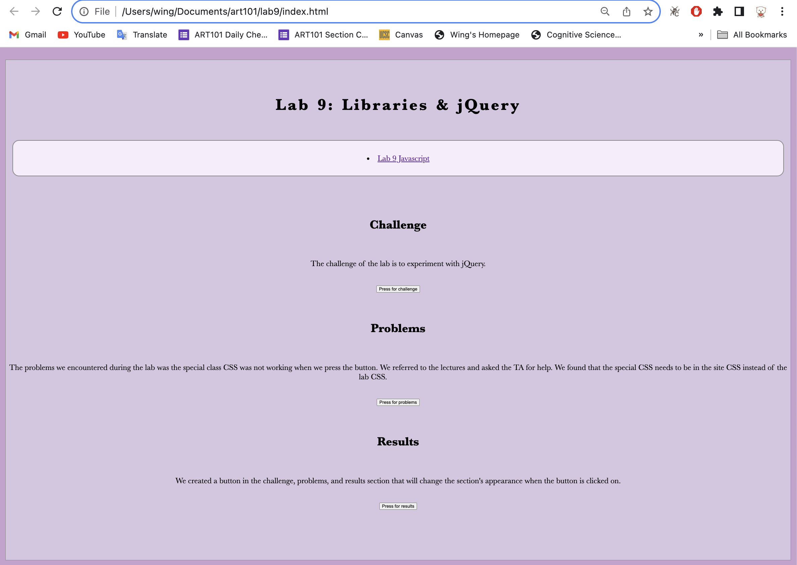
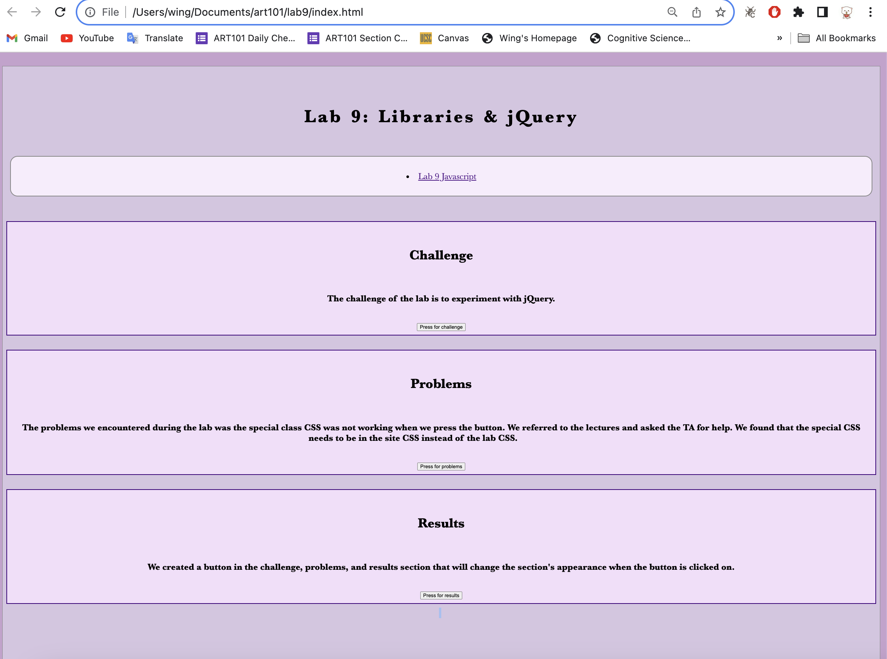

Lab 14: Debugging Tools & Strategies
Challenge
The challenge of the lab is to fix old labs with our debugging knowledge.
Problems
The problems we encountered during the lab was we tried to make the buttons for lab 9 centered but Wing couldn't make the buttons centered even though she has the same code as Ashley. We asked the TA and she couldn't find the reason either. We took a break and tried to make the numbers appear in organized columns in lab 13. We were able to figure it out after referencing to CSS column property online. In our freetime, we tested comments from online about making button in the center and finally was able to debug lab 9 for Wing.
Results
We were able to put numbers into columns when the "Run" button is clicked in lab 13 and center the buttons in lab 9.


In lab 9, the buttons were off centered, so we tried to debug and position them in the center. At first, we thought there was something wrong in the CSS, but the buttons were centered for Ashley even though we both use the same code. We tried looking at the lectures and eventually asked the TA for help. The TA looked at our code and couldn't find the problem either, so we stopped debugging it. After section, in our freetime, we searched more website online and testing people's comments and finally debugged the issue. The buttons were centered after turning the element into a block then use margin 0 auto to make sure they are centered.